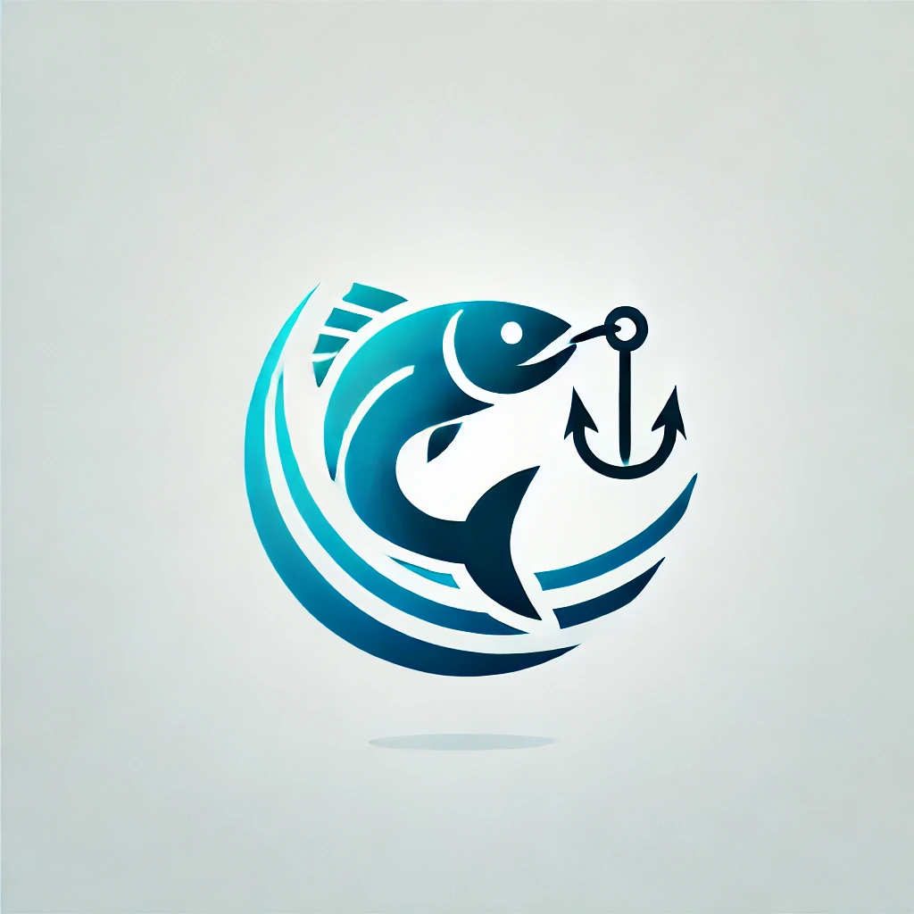

Umweltschutz im Bereich Fischen

 (QR-Code nur für localhost zugänglich)
(QR-Code nur für localhost zugänglich)
(QR-Code nur für localhost zugänglich)
(QR-Code nur für localhost zugänglich)
Wie nachhaltige Fischereipraktiken die Bestände von Fischen schützen und langfristig erhalten.
Die Auswirkungen der Überfischung auf Ökosysteme und menschliche Lebensgrundlagen.
Strategien, um den Lebensraum der Meeresbewohner zu erhalten und den Fischbestand zu schützen.
Wie gesetzliche Bestimmungen helfen, die Fischbestände zu schützen und verantwortungsbewusst zu angeln.
Fischzucht als eine Lösung zur Entlastung von wild gefangenen Fischarten und zur Reduzierung der Belastung natürlicher Ökosysteme.
Ein Überblick über Organisationen und ihre Bemühungen zum Schutz der Ozeane und Fischbestände.
Wie Plastikmüll und andere Abfälle die Meeresumwelt schädigen und Maßnahmen zu deren Vermeidung.